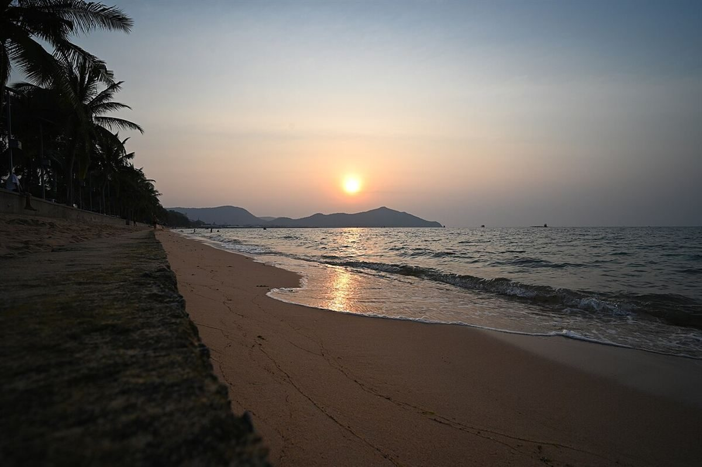

口コミ
いつか行ってみたい、
の声(創作)。
以下は制作側の創作で、実在のお客様の投稿ではありません。お店の様子や体験を示すものでもありません。
イメージ例いつか訪ねてみたいお店です。まずはInstagramをのぞいてみようと思います。
イメージ例電話番号が分かったので、行く前にお電話で聞いてみたい。そんな日を想像しています。
イメージ例更新されるInstagramを、ときどき見に行きたい。いつか実際に行ってみたいです。
創作の例です。実際のお客様の口コミは、掲載の許可をいただいたものだけを後から入れます。

